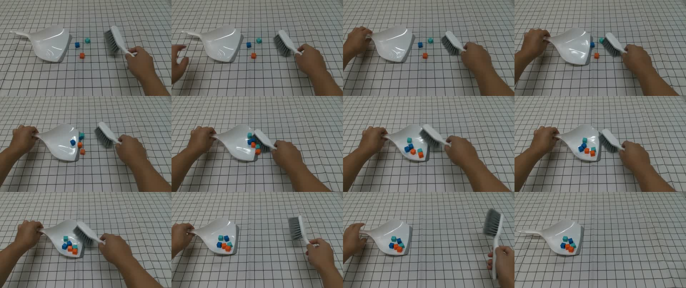

把眼前的动作，
带进机器人世界。
144 帧 · 一个双臂任务
左手扶住簸箕，右手挥动刷子。
从视频理解任务，搭建并验证一个可执行的机器人场景。
同一件事，两个世界。
切换相机，看动作如何发生。
让每一步，都有来处。
几何决定接触，接触推动物体。
渲染跟随保存的物理轨迹。
- 01
看清动作
OBSERVE从 6 秒原片拆出簸箕定位、刷子推进与撤刷；保留遮挡和尺度的不确定性。
RGB → 任务与尺寸假设 - 02
建立场景
RECONSTRUCT工具共享米制、Z-up 坐标。簸箕保留可进入的开口，刷毛分别表达碰撞与外观。
场景描述 → MJCF / 视觉资产 - 03
交给物理
EXECUTE根据视频编写技能与 IK 控制器，驱动 TIAGo++ 双臂。6 枚自由刚体方块由实际接触推进。
ctrl + mj_step → 状态 / 接触 - 04
换个角度
RENDER用官方 USDExporter 导出轨迹，在 Blender 中补齐视觉工具、灯光和三个相机。
USD → global / ego / gripper
商用双臂，
原始平行夹爪。
采用 PAL Robotics 的 TIAGo++，模型来自 Google DeepMind MuJoCo Menagerie，使用 Apache-2.0 许可。本任务固定轮式基座，工具以预抓持状态连接原始夹爪；双臂保持官方机器人几何与关节结构。查看官方模型
画面之外，还有证据。
等待实跑指标视频用于看动作；收集数、接触记录与实际轨迹用于检查执行。运行完成后，这里展示对应记录。
- 收集方块
- — / 6 以运行终态判定
- 仿真时长
- — s 物理轨迹时间
- 最大穿透
- — mm 接触几何检查
- 刷子接触冲量
- — N·s 刷子—方块法向冲量

这次复现采用哪些建模假设？
尺度来自估计单目视频未做度量标定；尺寸、质量、摩擦是场景建模设定。
工具从预抓持开始固定基座、工具固定于夹爪。本次任务覆盖持工具清扫阶段。
刷毛采用刚性代理碰撞使用刚性几何，Blender 用独立细丝表达刷毛外观。
方块数量守恒原片初始清楚可见 3 枚、末段可见 6 枚；仿真从开始就放入 6 枚自由刚体。
求解与执行分开IK 使用独立状态，实际轨迹由 actuator 控制和物理积分产生。
画面来自同一轨迹三视角读取保存的 rollout；程序化重建负责工具外观与场景呈现。
从空场景，到这一刻。
保留搭建发生的过程。
代码搭建，
界面实录。
Blender Python 负责生成场景，真实 GUI 用于载入、检查和回放。ffmpeg 在 Xvfb 虚拟显示中持续记录 Blender 窗口变化，剪成这段过程短片。
录屏保留中间场景检查、相机切换与动画回放。
查看原片关键帧

从这里，接着做。
场景、轨迹与步骤一起保留。
# Python 3.12 / isolated environment
python -m venv .venv
source .venv/bin/activate
pip install -r requirements.txt
# Blender 4.2.1 / available NVIDIA GPU
export BLENDER=/path/to/blender
export CUDA_VISIBLE_DEVICES=0
# Simulate → audit → USD → Blender → videos
bash scripts/reproduce.sh每次运行写入独立目录，保留归档轨迹。完整命令、建模决策与问题定位见中文工作流记录；Mac 可直接打开独立 .blend 查看。